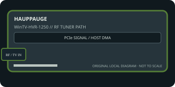

[ INDIVIDUAL COMPONENT // EXPANSION CARDS ]
Hauppauge WinTV-HVR-1250
Single-tuner PCIe card for North American analog TV, ATSC terrestrial and clear-QAM cable capture. This static reference distinguishes documented card I/O from host software, codecs, and external signal paths.

IDENTIFICATION: Match the exact SKU, model marking, part number, board revision, bracket and connector layout to manufacturer documentation. Similar family names do not imply interchangeable ports, firmware or support.
Capture, playback and compatibility specifications
| Exact model / SKU | WinTV-HVR-1250 — verify the marking and revision on the physical card. |
|---|---|
| PCI/PCIe bus and lanes | PCI Express x1 card; manufacturer support also lists a PCIe x16 slot as mechanically/electrically usable. Verify motherboard lane wiring and legacy driver compatibility. |
| Digital video inputs | Single RF coax tuner receives ATSC over-the-air digital television and unencrypted Clear QAM cable channels where offered. ATSC formats are supported up to 1080i; encrypted cable/satellite output is not decoded. |
| Analog ports | RF coax supports NTSC analog cable/over-the-air television. There is no video output; this record does not claim separate composite or S-Video input unless the exact board/cable revision provides it. |
| Input formats | Digital capture follows the broadcast transport stream, including supported ATSC 1080i; analog NTSC is captured/encoded through host software. Tuner standard and channel availability are region/provider dependent. |
| Output formats and connectors | No video output connector; the card tunes and captures one program at a time. Digital recordings can be saved as broadcast-format transport streams; analog output is not provided. |
| Encoding and driver model | No dual hardware encoder is specified. The Hauppauge support documentation describes transport-stream recording for ATSC/Clear QAM and SoftPVR software encoding for analog TV; conversion to other file codecs is software-side. |
| Operating-system compatibility | Legacy Hauppauge Windows driver/software stack; support page lists Windows 11, 8 and 7 (32/64-bit) and historical Media Center releases. No current macOS/Linux driver support is documented there. |
| Software | Hauppauge WinTV application/driver package; older WinTV 6/7 and Windows Media Center paths differ in recording format and setup. Confirm available installer compatibility before relying on this discontinued model. |
| Power and cooling | PCIe-slot powered; the manufacturer support page does not state a separate auxiliary connector or a wattage figure. Confirm the exact board, slot power, tuner cooling and stable RF cabling. |
| Firmware caveat | The cited legacy support material does not document a field-updatable standalone firmware utility. Keep the board-specific driver and WinTV package matched; do not install tuner firmware or drivers for HVR-1150/HVR-1265 by family resemblance. |
Integration notes and limitations
- One tuner cannot watch/record independent channels simultaneously or switch analog and digital tuners at once. Clear QAM availability varies; protected cable/satellite channels require an authorized set-top/compatible capture path.
- Verify physical slot fit, PCIe lane wiring, BIOS/UEFI enumeration, host bandwidth and driver support together; a longer slot does not guarantee the electrical width the card needs.
- Record the board revision, firmware/driver versions, OS build, application, signal standard, source timing and tested pixel format as part of commissioning.
- Distinguish a video transport/pixel format from a compressed file codec. Unless the manufacturer explicitly states hardware encoding, codec creation and recording are host-application tasks.
Manufacturer sources and support
- Hauppauge — WinTV-HVR-1250 manufacturer support and specificationsManufacturer source; consult the exact model/revision and software-release notes before installation.
- Hauppauge — WinTV-HVR-1250 quick-install guideManufacturer source; consult the exact model/revision and software-release notes before installation.
Product revisions, driver support and application integrations change over time; manufacturer documentation for the exact card takes precedence over generic family-level guidance.